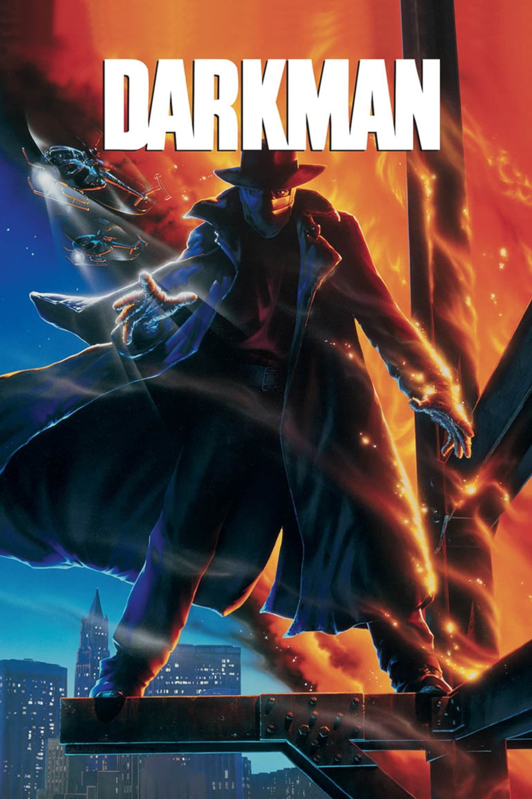

Мировая премьера: 24 августа 1990
Слоган: Новое лицо правосудия.
Сюжет: Доктор Пейтон Уэстлейк находится на пороге грандиозного открытия: он заканчивает эксперименты по созданию искусственной человеческой кожи. Но банда уголовников во главе с садистом Робертом Дюрантом вторгается в лабораторию Пейтона и взрывает её вместе с несчастным доктором. Чудом оставшийся в живых и обезображенный до неузнаваемости Уэстлейк пытается восстановить лабораторию. Разрываясь между желанием начать новую жизнь с бывшей возлюбленной Джули и жаждой мести, Пейтон начинает принимать чужие обличия, превращаясь в грозного и жуткого Человека Тьмы.
Режиссёр: Сэм Рэйми
В ролях: Лиам Нисон, Фрэнсис МакДорманд, Колин Фрилз
| Лиам Нисон | Доктор Пейтон Уэстлейк / Человек Тьмы |
| Фрэнсис МакДорманд | Джули Хэстингс |
| Колин Фрилз | Луис Стрэк |
| Ларри Дрэйк | Роберт Дюрант |
| Арсенио "Сонни" Тринидад | Хунг Фат |
| Дженни Эгаттер | Доктор |
| Теодор Рэйми | Рик Андерсон |
Бюджет: $ 16 млн.
Кассовые сборы в США: $ 34 млн.
Кассовые сборы в мире: $ 49 млн.
Продолжительность: 1 ч. 30 мин.
Рейтинг: 6.4